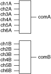

The following figure represents the NI PXI-2596 in the dual 6×1 multiplexer topology.

In this topology, you can connect channels by calling the niSwitch Connect Channels VI or the niSwitch_Connect function.
To connect the CHnx terminal to the COMx terminal, disconnect the previously connected terminal from the COMx.
For example, to connect ch1A to comA, call niSwitch_Connect (vi, "ch1A", "comA"). If you now want to connect ch2A to comA, first disconnect the existing connection. The sequence of calls for this task is as follows:
niSwitch_Disconnect (vi, "ch1A", "comA")
niSwitch_Connect (vi, "ch2A", "comA")
|
Note All channels are disconnected from COM when the NI PXI-2596 is in its power on state. |
When scanning the NI PXI-2596, a typical scan list entry could be ch1A->comA;. This entry routes the signal connected to CH1A to COMA.